who's ano
"亜野です"
あやと読みます。漢字を見て"あのさん"と呼ばれる事もあります。
神戸市出身で、今は大阪市に住んでいます。
「呼ばれてないけど助けに来ました」自分の仕事や作品で誰かが笑顔になれば喜びます。
career
"販売員でした"
何かを提案したり販売したりする仕事をずっとしていました。
アパレル業が10年以上で一番長く、眼眼の販売や調整なども経験しました。
サイト制作やデザインは、ファッションのコーディネイトや商品レイアウトの考えに似ているところもあるなと感じています。
skills
web
-
HTML/css(sass)
-
JavaScript/jQuery
-
PHP
レスポンシブデザインの対応可能です。
適宜外部ライブラリーも使用します。
illust
Photoshop
アイコン・キャラクターデザイン
イラストのアウトラインは基本紙にサインペンで描いています。

others
英検2級
秘書検定2級
メンタルヘルスマネジメント検定2種
日常英会話可能です。
ペーパードライバーです。
works

line enoji
ミクロな王国を作っています。
スタンプとしても使えるラインの絵文字が好きでキャラクターを描いています。今後はスタンプもリリース予定です。
人との繋がりをほっこり優しい気持ちにしていたら嬉しいです。
おまけ
初めてパソコンを買って約1ヶ月後に作ったサイトです。(最初はブログサイトや絵文字の紹介部分はなかったです。)
ちなみにこのサイトはそのサイトから約2ヶ月後に作りました。イラストも丸い子以外は描き直してます。
これからもいろんな表現ができるように工夫していこうと思います。